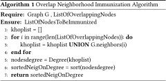

This is a web copy of https://doi.org/10.1145/3184558.3191566 Published in WWW2018 Proceedings © 2018 International World Wide Web Conference Committee, published under Creative Commons CC By 4.0 License. The modifications from the original are solely to improve HTML aiming to make it Findable, Accessible, Interoperable and Reusable. augmenting HTML metadata and avoiding ACM trademark. To reference this HTML version, use:
Permalink: https://w3id.org/oa/10.1145/3184558.3191566
DOI: https://doi.org/10.1145/3184558.3191566
WWW '18: Proceedings of The Web Conference 2018, Lyon,
France, April 2018
When an epidemic occurs, it is often impossible to vaccinate the entire population due to limited amount of resources. Therefore, it is of prime interest to identify the set of influential spreaders to immunize, in order to minimize both the cost of vaccine resource and the disease spreading. While various strategies based on the network topology have been introduced, few works consider the influence of the community structure in the epidemic spreading process. Nowadays, it is clear that many real-world networks exhibit an overlapping community structure, in which nodes are allowed to belong to more than one community. Previous work shows that the numbers of communities to which a node belongs is a good measure of its epidemic influence. In this work, we address the effect of nodes in the neighborhood of the overlapping nodes on epidemics spreading. The proposed immunization strategy provides highly connected neighbors of overlapping nodes in the network to immunize. The whole process requires information only at the node level and is well suited to large-scale networks. Extensive experiments on four real-world networks of diverse nature have been performed. Comparisons with alternative local immunization strategies using the fraction of the Largest Connected Component (LCC) after immunization,show that the proposed method is much more efficient. Additionally, it compares favorably to global measures such as degree and betweenness centrality.
CCS Concepts: • Computer systems organization → Embedded systems; Redundancy; Robotics; • Networks → Network reliability;
ACM Reference
Format:
Manish Kumar, Anurag Singh, and Hocine Cherifi. 2018. An
Efficient Immunization Strategy Using Overlapping Nodes
and Its Neighborhoods. In WWW '18 Companion: The 2018
Web Conference Companion, April 23–27, 2018 (WWW
’18 Companion), Lyon, France. ACM, New York, NY,
USA 7 Pages. https://doi.org/10.1145/3184558.3191566
In epidemiology, an outbreak is a sudden increase in occurrences of a disease in a particular time and place. It may affect a small and localized group or impact upon thousands of people across an entire continent. The outbreaks of contagious diseases impose a tenacious and major threat to the lives of people all over the world. The impact of these diseases is immense and is felt across the world. These diseases not only effect the health of individuals directly, but also has an impact on societies, economies and political systems. They may lead the victim countries into economic crisis. Before these diseases turn into a critical state of affairs, it is required to come up with appropriate actions on time to arrest it. In order to be able to prevent the dreadful consequences of an infectious disease, it is essential to have a deep understanding of the behavior of its propagation [20, 24, 33] in the social groups. lt is a crucial issue to come up with an approach to decelerate the contagion or to stop it completely, if possible [25, 26, 28]. By vaccinating the people, it is possible to protect them and prevent them to transmit the disease among their contacts. But vaccination of entire population is nearly impossible to achieve and is not always feasible due to limited amount of vaccines and time. Thus targeted immunization strategies are the essential techniques to arrest the epidemic efficiently. An effective immunization strategy requires a mechanism to identify the influential spreaders so that the epidemic can be arrested by immunizing a small fraction of entire population[2, 3, 20]. To be able to find the central individuals and to study the spreading trend of an infectious disease, we need a model that can be used to mimic the population and epidemic process in this population.
A network representation can be used to model the disease spreading process by considering nodes as individuals and edges as interactions between them [8]. The diffusion process can occur on networks of all kind such as social (e.g. epidemic), technological (e.g. computer viruses), etc. Instead of occurring randomly, epidemics tend to follow the structured pathways formed by the interactions and connections of the nodes in the network [1, 19].
Immunization strategies can be classified into two categories: global or local immunization strategy.
Global immunization strategies require knowledge of the entire network in advance. Targeted immunization strategies based on centrality measures, such as degree [29] and betweenness [27] are typical examples of such strategies. In these methods a centrality value is computed for each node of the network. Then, all the nodes are ranked in descending order of their centrality values and the higher central nodes are selected for immunization. Most of the time it is very hard to get the precise information about the nodes’ contacts, which makes the global immunization completely impractical and unrealistic. On the other hand, local immunization strategies [4, 7, 10, 13, 14, 30] are more or less agnostic about the network structure. They require information only at node level to find the targeted nodes for immunization. For example, random immunization, where nodes are selected at random for immunization is the simplest local strategy. It does not require any information about the network structure. As local immunization strategies use only local information about the network they are preferred for large-scale and especially real-world social networks where the topologies are usually unknown.
According to recent research overlapping community structure, plays a crucial role in epidemic spreading [5, 6, 11, 12, 13, 15, 16, 23, 30, 31, 34]. Although, there is no clear definition of a community structure, it is very often apprehended as the division of network vertices into subgroups (communities), where intra community nodes are densely connected, but inter community nodes are sparsely connected to each other. In networks, with non-overlapping community structure a node belongs to a single community, while it can be shared with different communities in networks having overlapping community structures. Most real-world social networks are structured in communities that are overlapping in nature. For example, if we consider a population as a network, an individual may belong to more than one circle, like friends circle, family circle, classmates circle, etc. . Considering a network of actors, an actor may play in movies of various genres (Musical, Action, Adventure, Comedy, Crime, Drama, Fantasy, Historical, etc).
In this paper, we propose an immunization method which has advantage of the role of neighbors of the overlapping nodes in epidemic dynamics. Since this method does not require complete information of the network, we claim it to be a local immunization method.
The rest of this paper is organized as follows: In section 2 we recall briefly the related works. Section 3 introduces the proposed immunization strategy. Section 4 presents experimental results to evaluate its effectiveness as compared to both local alternative immunization strategies as well as prominent global strategies. Section 5 draws the conclusion.
The objective of targeted immunization strategies is to uncover a set of the most influential nodes in a given network. Based on the amount of information they need about the overall network topology, they can be classified into two groups : Global and Local. Immunization strategies that require information of the entire network structure are said to be Global Strategies while strategies requiring knowledge of network topology only at node level, are classified as Local Strategies. The most widely known global strategies together with alternative influent local strategies are recalled. Indeed, they will be used in order to compare their efficiency with the proposed strategy.
The immunization strategies in this class aim to assign a rank to all the nodes in the network and to immunize them according to their rank. Thus for each node of the network, a so-called centrality measure reflecting its ability to propagate the disease is computed. The ranks are assigned in decreasing order from most central to less central node. In these strategies knowledge of the entire network is required because all the nodes are involved in the process. Usually, global strategies perform better than local strategies because they can use more information about the network topology. Degree and Betweenness centrality are the most influential global strategies that are used usually for comparative purposes.
The degree of a node is the number of its immediate neighbors. Nodes having high degree measures are considered to be more influential and are selected for immunization [12] . In this method the degree of all the nodes in the network are computed and they are assigned a rank based on their degree. Nodes are then immunized in the decreasing order of degree values. The degree immunization strategy is efficient in scale-free networks even when a small percentage of population is immunized[29].
Betweenness centrality [27] of a node is defined as the number of shortest path between every pair of nodes that passes through it. The intuitive way to think about betweenness centrality of a node is the number of times an information passes through a particular node, if it flows through the network. In this strategy, the nodes are selected for immunization based on their overall betweenness centrality. This strategy is among the most efficient global strategy, however it suffers from a high time complexity.
Although global methods are effective for immunization, they require a high amount of information. This characteristic prohibit their use in large scale real-world networks. Local immunization strategies require less information and are computationally more efficient. We recall two methods that try to target the most highly connected nodes for immunization (Acquaintance immunization and Threaded-Tree Immunization) and two methods that take advantage of the community structure to select the immunized nodes (Community Bridge Finder and Membership Immunization).
Acquaintance immunization [7] refers to choosing a random fraction of the nodes and looking for one of their neighbor or acquaintance at random. The acquaintances are immunized rather than the originally chosen nodes. This strategy is based on the fact that randomly selected acquaintances possess more links than randomly selected nodes. The Acquaintance immunization algorithm works as follows: first a random node v 0 is picked, and then one of its acquaintance, v 1 is picked at random. The nodes which are picked as acquaintances at least n times are immunized. For n = 1 the acquaintances are directly immunized. The strategy requires only information about randomly selected nodes and their immediate neighborhood . It identifies highly connected nodes without any information about the global structure of the network.
Threaded-tree immunization [4] targets the highly connected nodes by exploring the neighborhood of randomly selected nodes. It assumes that high degree nodes will appear more frequently in the neighborhoods. The process begins with an initial node selected at random. It is queried to get some neighbor nodes and then those neighbors are queried instead. A record is made to log the inquiry frequency of each node and the process above is performed recursively.The algorithm performs as follows:
Step 1: Start from node i in the network. Query i to get n neighbors, denoted by i 1, i 2, ..., in ;
Step 2: Keep querying each node obtained above, and get n neighbors of each of them.
Step 3: Repeat the iteration for t time steps. Record the inquiry frequency of each node.
Step 4: Take m nodes queried most frequently and immunize them.
It does not require global information about the network topology. Indeed, each node needs to figure out only local information about its neighborhood. This strategy is more effective than acquaintance immunization, especially when few nodes are immunized.
The Community Bridge Finder algorithm (CBF), proposed by Salathe et al. [30], is a random walk based algorithm, aimed at identifying nodes connected to multiple communities. It is based on the idea that the first node not connecting back to already visited nodes of a current random walk is more likely to belong to a different community.The algorithm starts by selecting a random node. Then, a random path is followed until a node is found that is not connected to more than one of the previously visited nodes on the random walk. This node is identified as a potential Community bridge. Two of its neighbors are then selected at random. If none of them is connected to a previously visited node, the potential community bridge is as a valid bridge. It is immunized. This strategy does not use any information about the network structure. Note it has been designed in the context of non-overlapping communities.
The Membership immunization [13] targets the so-called structural hubs. In a network with overlapping community structure, structural hubs are the overlapping nodes that belong to a high number of communities. Through those nodes the epidemic can propagate easily to a greater number of communities. When the community structure is known, the overlapping nodes are immunized in descending order of their Membership number, i.e., the number of communities to which they belong. If the community structure is unknown, a local community detection method is used to identify the overlapping nodes. This strategy compares favorably with global strategies especially at high infection rates and for dense communities.
Random Walk Overlap Selection (RWOS) targets the overlapping nodes with high degree [32] . With a list of overlapping nodes in hand, RWOS performs a random-walk starting from a random node of the network. At each step, if a visited node is in the list of overlapping nodes, it is nominated as a target node for immunization, otherwise, the random-walk proceeds. This process continues until the desired immunization coverage is reached. In fact, this strategy try to immunize the overlapping nodes according to their degree centrality. Indeed, the probability of visiting a node in a random walk is proportional to its degree. As for membership immunization, if the overlapping nodes are unknown, a local community detection algorithm is used.
Many real-world networks, such as Internet, the World-Wide Web, protein interaction networks exhibit an heterogeneous degree distribution. The vast majority of nodes have few connexions while a small percentage of nodes are highly connected to their neighbors. These hubs that have a huge amount of direct connections to other nodes in the network are very influential spreaders and they need to be identified and immunized. In community-structured networks, overlapping nodes are also influential spreaders, even though they may not have high degree. Indeed, they act as bridges between communities. This is the reason why several methods have been proposed that make use of overlapping nodes in order to control epidemic spreading [13, 32] .
The proposed strategy Overlap Neighborhood also takes advantage of the overlapping nodes. Rather than immunizing them, it selects immediate neighbors of overlapping nodes for immunization. It is local, unaware of global knowledge of the network, and in order to identify influential spreaders for immunization, it only requires the information at the node level. The idea behind our strategy is based on the definition of overlapping community - i.e., within community nodes are densely connected to each other as compared to nodes in other communities.. Since, overlapping nodes are part of more than one community, and real-world networks have few hubs, there is higher probability that these hubs are neighbors of the overlapping nodes in their respective communities. So, through the overlapping nodes we can target these influential nodes (nodes having high degrees) in their respective communities for immunization. Targeting these hubs allows to brake the communities in smaller subgraph (need not to be connected). In order to get a better understanding of the concept behind this strategy, we refer to Fig 1. In this figure a toy network is used to explain how overlapping nodes can help targeting the influential nodes within the communities. Immunizing these nodes allows to break the communities into small connected or disconnected components, and consequently the all networks split in many components. In Fig. 1 overlapping nodes are the nodes with red color. They belong to the two communities represented by the dotted circles. Their immediate neighbors are the nodes numbered (1, 8, 11, and 13). According to the definition of overlapping community structure, these nodes tend to be the nodes with the higher degree value. If these neighbors are immunized, the largest connected component in the network is of size two. Note, it makes sense that being members of multiple communities, overlapping nodes have high probability to be connected to high degree nodes in several of their communities.
Given the network and the overlapping nodes, the proposed strategy works as follows:
Step 1. Each overlapping nodes are queried to find its immediate neighbors.
Step 2. All the obtained neighbors are ranked according to their degrees.
Step 3. Immunize the required fraction of these ranked nodes in descending order of their degrees for immunization. The algorithm in pseudo-code for the proposed strategy is reported in Algorithm 1.

In order to evaluate the proposed strategy experiments are conducted with four real-world networks. Performances of various immunization strategies are compared using the fraction of the Largest Connected Component (LCC) that can be infected after immunization of a given fraction of nodes. First, we describe briefly the datasets, and then discuss the experimental results.
Selecting appropriate datasets is essential to analyze the performance of the various methods. As we want to evaluate global and local immunization strategies, we need to restrict our attention to networks with a size compatible with our computational constraints. Unfortunately, this prohibits using available real-world networks with ground-truth community structure. We have selected 4 real-word datasets frequently used in the literature (two collaboration networks among scientists, a communication network and a technological network). As the community structure of these networks is unknown, the Speaker Listener Label Propagation Algorithm (SLPA) algorithm is used to uncover the communities and the overlapping nodes [36]. Indeed, according to recent studies SLPA is a fairly efficient algorithm [17, 35]. Structural properties of these datasets are described in (Table 1).
Power Grid: The Power grid network is an undirected, unweighted network representing the topology of the Western States Power Grid of the United States. It consists of power plants and substations as nodes, and the transmission lines between them as edges. A power plant generates electricity and a substation distributes it to the final consumers [9].
High Energy Physics - Theory: Arxiv HEP-TH collaboration network is from the e-print arXiv and covers scientific collaborations between authors of papers submitted to High Energy Physics - Theory category. If an author i co-authored a paper with author j, the graph contains a undirected edge from i to j. If the paper is co-authored by k authors this generates a completely connected (sub)graph on k nodes. Naturally these networks contain multiple communities representing various research topics and several overlapping nodes for researchers whose research interests cover various topics [18].
General Relativity and Quantum Cosmology (GR-QC): It is also an Arxiv GR-QC collaboration network that covers scientific collaborations between authors of papers submitted to General Relativity and Quantum Cosmology category [18].
Enron Email:The Enron email communication network is one of the few large example of real world email datasets available for research. It covers all the email communication within a dataset of around half million emails (made public by the Federal Energy Regulatory Commission). Nodes of the network are email addresses and edges in the network correspond to email communication. Edges can be weighted by the number of emails exchanged between two individuals. Additionally, directionality can be used to separately analyze emails sent or emails received. In our case, we use the undirected and unweighted version. We can expect to find several communities corresponding to different roles inside the company, as well as several overlapping nodes among the coordinators of these communities [21, 22].
tableStructural properties of real networks, including number of nodes (N), number of edges (E), number of overlapping nodes (on), average degree (< k >) and number of clusters (Nc ).
| Network | N | E | on | < k > | Nc |
| Power grid | 4941 | 6594 | 1323 | 2.66 | 425 |
| GR-QC | 5242 | 14496 | 1250 | 5.53 | 694 |
| HEP-TH | 9877 | 25998 | 1645 | 5.26 | 986 |
| Enron email | 36692 | 183831 | 3773 | 10.02 | 680 |
In this section the proposed method is compared with two global methods (degree and betweenness) and four local methods (acquaintance with n = 2, CBF, RWOS and membership). For a given fraction of immunized nodes the LCC fraction value after immunization allows to compare the effectiveness of the various methods. Indeed the LCC is the upper bound of the epidemic outbreak.
Fig. 2 reports the LCC fraction versus the fraction of immunized nodes for the immunization strategies under study and the four datasets. Results clearly show that we can generally distinguish two classes of methods in terms of performances. The first class is made of the global methods (betweeness and degree) together with Overlap Neighborhood, while the second class regroup the alternative local methods. Indeed, Overlap Neighborhood produces LCC comparable to global strategies for all immunization coverage values. Whatever the dataset, the first class of methods outperforms the second one in a wide range of immunized fraction. These results confirm our intuition that overlapping nodes are more likely to be connected with the high degree nodes of their communities. Hence, they allow to target the most central nodes (in terms of degree) from the communities for immunization in their local neighborhood. This is the reason why performances are very similar to the degree immunization strategy. Note, it is done without having knowledge of the entire network topology. Whereas, for selecting the same influential nodes, degree immunization needs to inspect the degree of all the nodes. Overall, the proposed method targets the higher degree nodes in the network with the only knowledge of its overlapping nodes and local information about their neighborhood. Now, we have a broad picture, let us look at the results in more details. Fig. 2 (a), reports the results for Enron-Email network. In this case we can classify the methods into three classes of various efficiency. The first class that contains the most efficient immunization strategies contains Degree, Betweenness and Overlap Neighborhood. Note that Degree and Overlap Neighborhood perform identically when the fraction of immunized nodes immunized is lower than 7%, while Betweenness is slightly more efficient. Above this value Overlap Neighborhood and degree are more efficient than betweenness. Acquaintance and CBF form a homogeneous second group with very similar performances. Although, they are less efficient than the first group their effect is noticeable. Finally, the third group is composed with membership and RWOS. For this network both are performing poorly.
Results of the experiments with the collaboration networks are reported respectively in Fig. 2 (b) for the GR-QC network and Fig. 2 (c) for the HEP network. They are very consistent. Indeed, we observe similar behavior of the immunization strategies for both datasets. The most efficient method is betweenness when a small fraction of nodes is immunized (until 10% for GR-QC and 12% for HEP). It is closely followed by Overlap Neighborhood. Degree is one step behind. When the fraction of immunized nodes increases Overlap Neighborhood becomes the most efficient method. The local methods (membership, acquaintance and CBF) are clearly less performing even though their performances increases with the fraction of nodes to be immunized. Acquaintance always outperforms membership and CBS. These results suggest that highly connected nodes are more important than bridges between communities to prevent the epidemic spreading. RWOS is in between those two extremes. When the fraction of immunized node is low, it behaves like the global methods. As this fraction increases its behavior is more similar than the other classical local immunization strategies.
Finally Fig. 2 (d) presents the simulation result for the Power Grid network. In this case we can clearly consider two groups. The most performing strategies composed by two local strategies (Overlap Neighborhood and RWOS) and the two global strategies (degree and betweenness) and the less performing ones represented by membership, acquaintance and CBF. Note that Overlap Neighborhood that up to almost 6% of immunization the proposed strategy outperforms all the local methods and it is almost similar to betweenness. But above a fraction of 6% it even surpasses the performance of betweenness. To summarize, Overlap Neighborhood outperforms all the local strategies for which we have conducted the experiments. Its performances are comparable to global immunization strategies such as degree and betweenness. When the fraction of nodes to immunize increases it can even surpass the performance of betweenness. All this is obtained with few efforts. Indeed, there is no need of the global information about network topology.One just has to know the overlapping nodes and their neighborhood.
An immunization strategy taking advantage of the overlapping community structure observed in many real-world networks is proposed. It aims to target the highly connected neighbors of the overlapping nodes for immunization. The so-called Overlap neighborhood immunization method has been empirically evaluated with four real-world networks. Experimental results are very promising. Indeed, they show the efficiency of the proposed strategy as compared to both alternative local methods and global ones. Indeed Overlap Neighborhood outperforms all the compared local strategies. Additionally, it compares favorably with global centrality methods such as degree and betweenness. Its main advantage is that it is local and does not require the knowledge of the whole network topology. The results confirm the importance of the community structure in order to design more efficient immunization strategies. The results obtained so far are promising, but there is a long way to go in order to get a clear idea of how the community structures impact the spreading process. We need to extend this preliminary work in two directions. First of all, more experiments involving new real-world datasets need to be done in order to confirm the effectiveness of the proposed strategy. Synthetic benchmark graph with controlled properties have to be used in order to get a clearer understanding of the role of the overlapping nodes in the epidemic process. The second direction is to conduct experiments with various community detection algorithms in order to evaluate the influence of the uncertainties linked to the identification of the overlapping nodes.
This paper is published under the Creative Commons Attribution 4.0 International (CC-BY 4.0) license. Authors reserve their rights to disseminate the work on their personal and corporate Web sites with the appropriate attribution.
WWW '18, April 23-27, 2018, Lyon, France
© 2018; IW3C2 (International World Wide Web Conference
Committee), published under Creative Commons CC-BY 4.0
License. ACM ISBN 978-1-4503-5640-4/18/04.
DOI: https://doi.org/10.1145/3184558.3191566